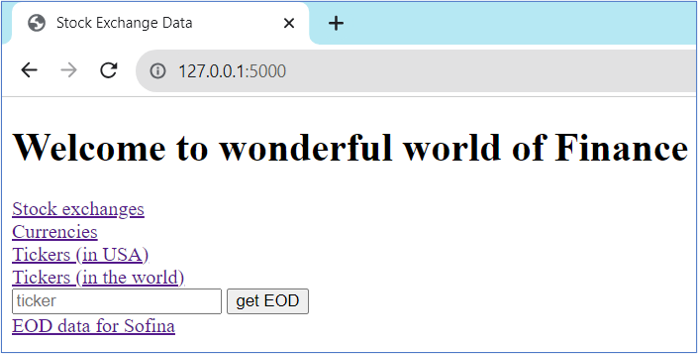
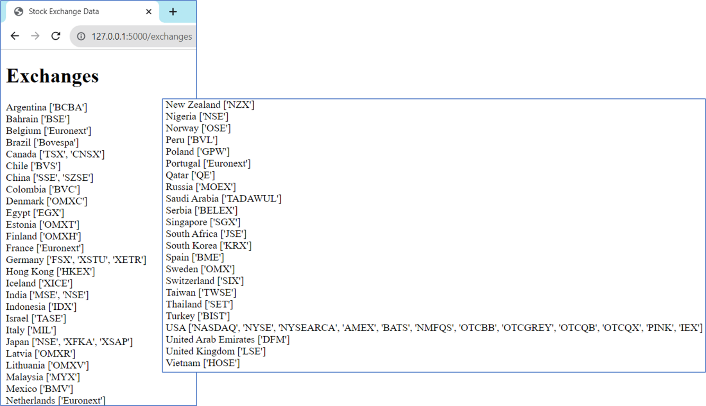
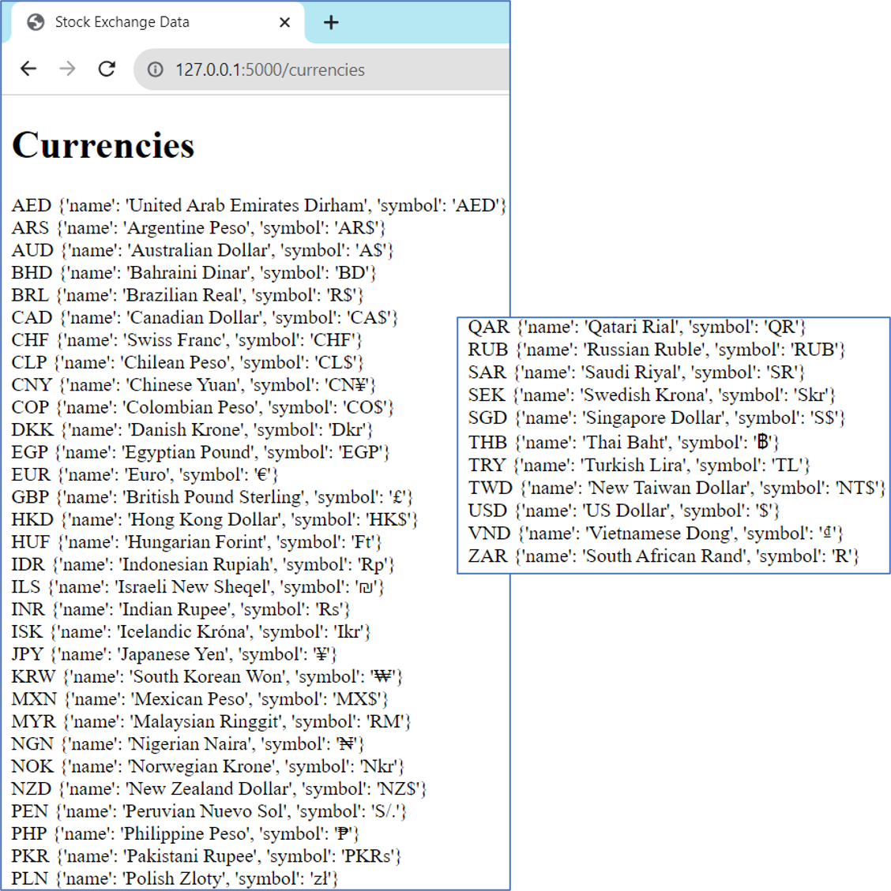
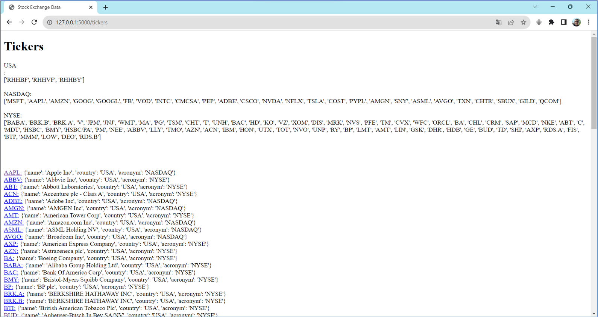
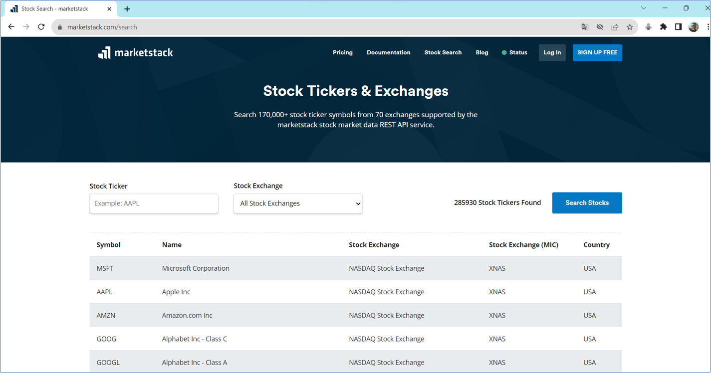
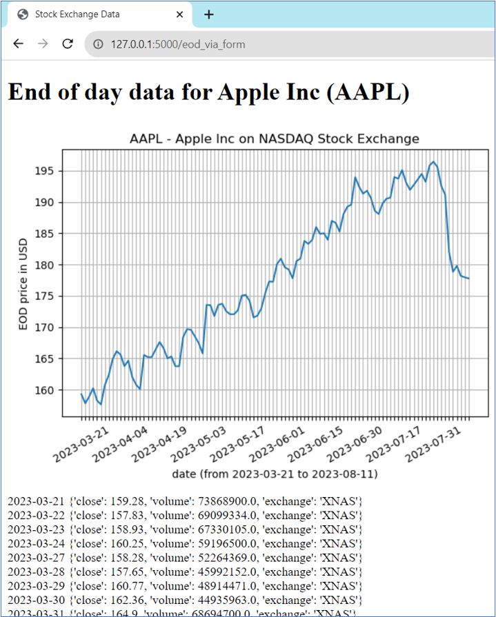
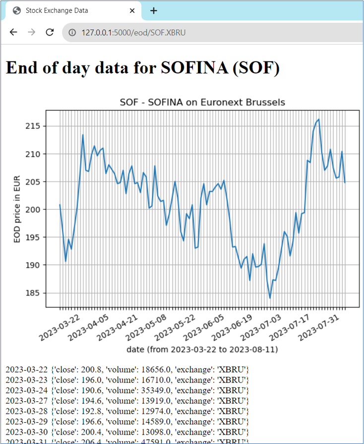
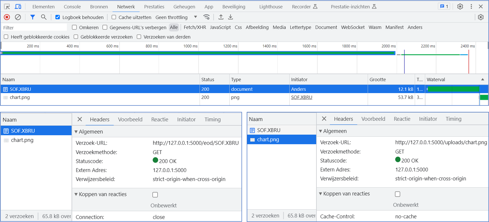

My portfolio.
Stock market application


This web application uses an API provided by marketstack.com. This API allows you to query

The following techniques were used:

A visual impression:
       © 2023 Marc Bruyland.